Turkey · April · 13 Days
Turkey is the only country we have been to where the landscape, the food, the architecture, and the entire feeling of a place changes so completely every two days that it stops feeling like one trip and starts feeling like five. Istanbul is not Cappadocia. Cappadocia is not the Aegean coast. The coast is not the thermal terraces of Pamukkale. None of it is anything like anywhere else we have been across fifty countries.
We went in April and the timing turned out to be near-perfect. Istanbul was in full tulip festival bloom — the parks carpeted in reds and yellows, the city at its most alive before summer crowds arrive. The temperature was warm but not punishing. The evenings were long. Turkey in April is a strong recommendation.
Istanbul arrived at us in a rush of colour. The Gulhane Park tulip festival was in full swing — hundreds of thousands of tulips planted across the park below Topkapi Palace, in reds and yellows and oranges, the kind of display that stops you mid-step. Istanbul actually has strong historical roots in the tulip — the Ottoman period was called the Tulip Era, and the city takes the flower seriously every April.
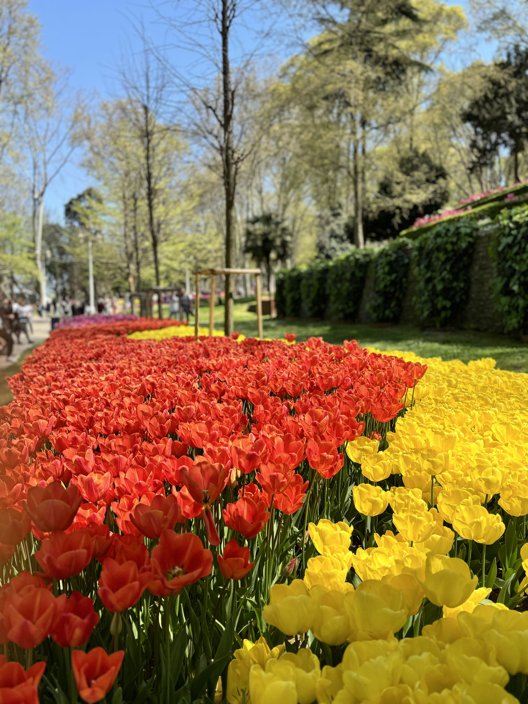
And then there are the cats. Istanbul's street cats are famous for good reason — they are everywhere, they are looked after by the whole neighbourhood collectively, and they have an air of complete ownership over the city that is both charming and accurate. Every cafe, every alley, every rooftop terrace. We photographed more cats in four days than we had in the previous four years of travel.
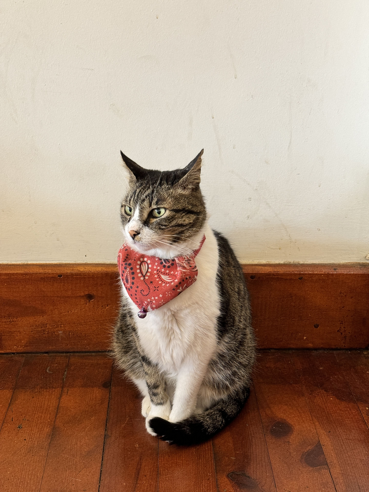
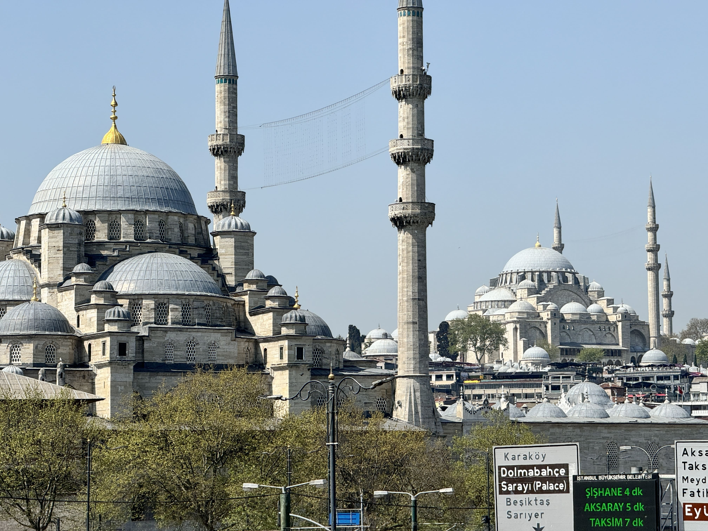
The mosque skyline from across the Golden Horn is one of the great urban views anywhere — domes and minarets layered against the sky, the New Mosque in the foreground and Suleymaniye behind it. We spent time inside both Hagia Sophia and the Blue Mosque on consecutive mornings, and the interiors of both are extraordinary in completely different ways.
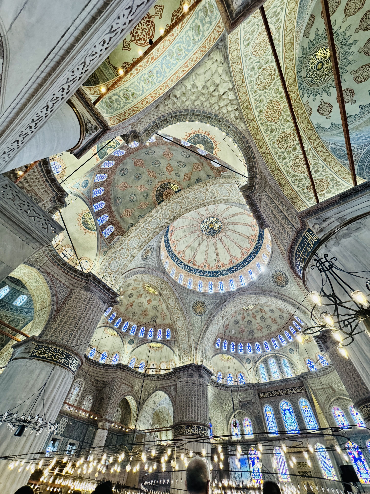
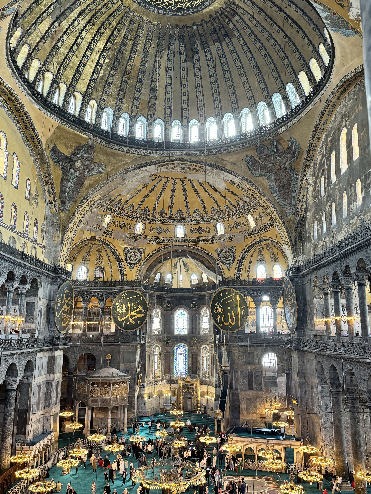
Hagia Sophia's interior is ancient gold and scale — a dome completed in 537 AD that still feels ambitious today. The Blue Mosque is the opposite: intricate blue Iznik tile work covering every surface, the light coming through hundreds of stained glass windows, the ceiling a layered geometry of domes and semi-domes that you just stand beneath and look up at for longer than you planned.
The Galata Tower is an icon of the European side of the city — a medieval Genoese tower that has stood since 1348, rising above the Galata neighbourhood. We did a photoshoot there in April with the cherry blossoms in full bloom around it, and that photograph — red dress, pink blossom, stone tower against blue sky — is the one that captures Istanbul's particular layered beauty better than any other we took on the trip.
"Istanbul contains twenty centuries of architecture, two continents, and roughly four thousand cats. It takes hold of you immediately and does not let go. We left wanting more days."
The food in Istanbul is some of the best we have eaten anywhere. The lamb in particular is exceptional — the lamb chops and mixed grill plates are the thing to order, with fresh flatbread, charred vegetables, and the kind of depth of flavour that comes from a cuisine that has been refining these dishes for centuries. Do not leave without eating proper kunafa — the original Turkish version, not the versions that have spread across the Middle East, made fresh with clotted cream and crisp pastry and eaten warm. Gulhane Sark Sofrasi for lunch near the palace. For the full meat feast experience, find a neighbourhood kebab house and order the mixed platter.
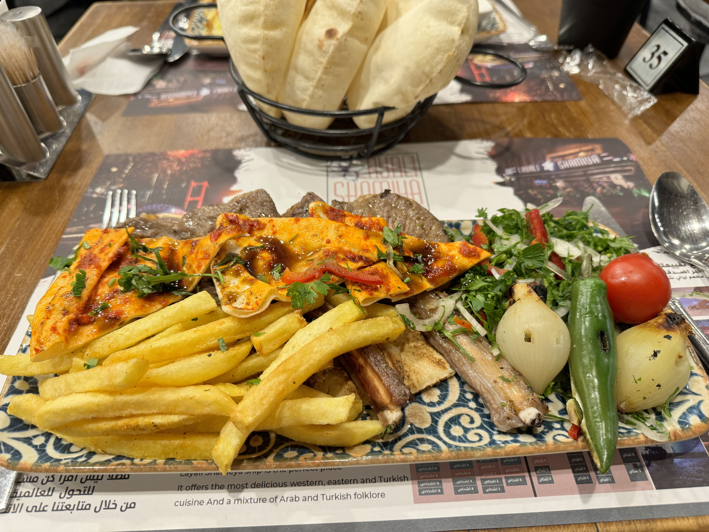
We flew from Istanbul to Kayseri and drove into Cappadocia as the light was going. Even at dusk, with the fairy chimneys in silhouette, the landscape is disorienting. It looks like a film set. It does not look like somewhere that exists. It is not a feeling that goes away.
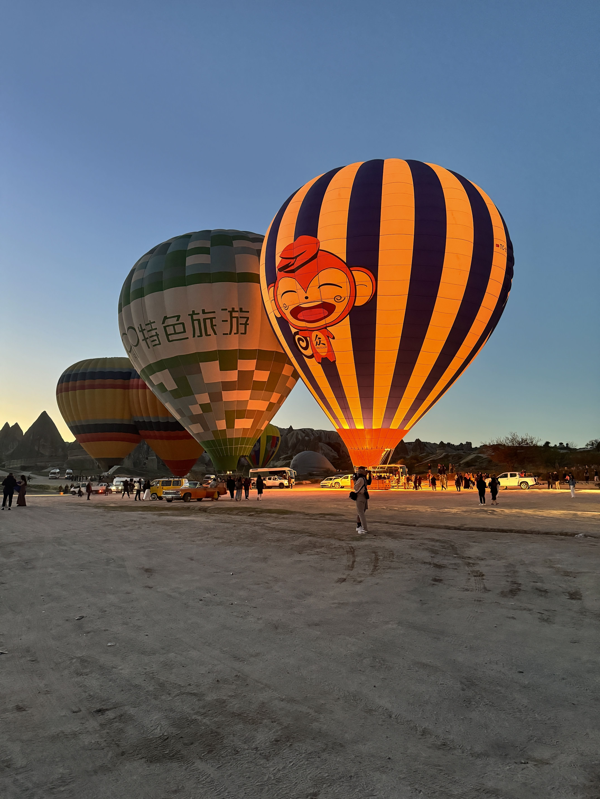
We set an alarm for 4:30am to watch the balloons launch. The launch field before dawn: dozens of balloons being inflated simultaneously, the burners firing, everything lit orange against the pre-dawn dark. Then they lift off — one by one, then in groups, until a hundred balloons are drifting in complete silence over the valleys and the chimneys and the sleeping town below. We stood in the cold and watched until the last one disappeared.
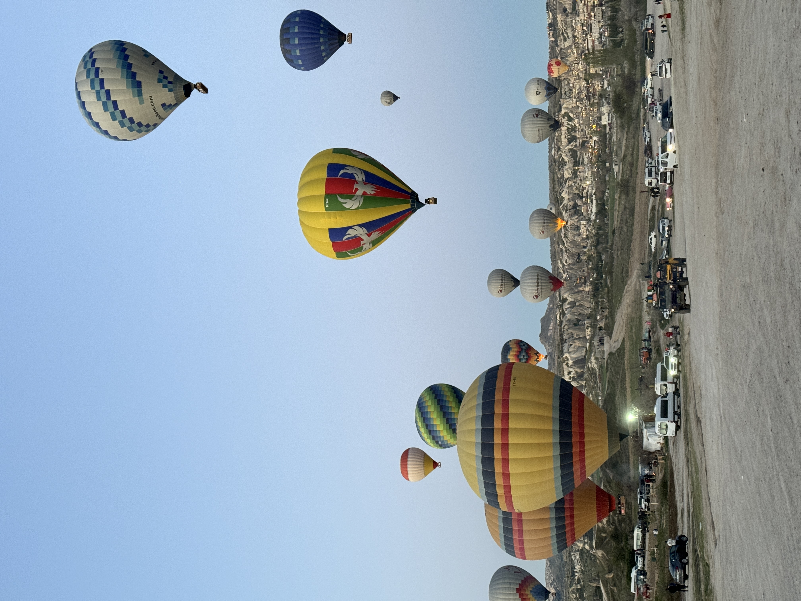

The valleys are best explored on foot or by rental car once the balloons are down. The Red Tour covers the major viewpoints and the underground city of Derinkuyu — a subterranean city carved eight levels deep into the volcanic rock, once home to thousands of early Christians hiding from persecution. Walking its low corridors is one of the stranger and more affecting experiences of the trip.
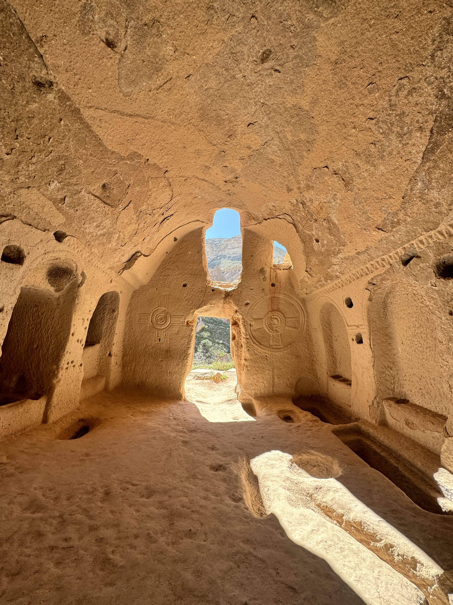
The cave churches scattered through the valleys — carved directly into the volcanic tuff, crosses etched into the stone walls, light falling through openings onto rock floors worn smooth by centuries of use — are among the most quietly extraordinary things we encountered on the entire trip.
We flew from Cappadocia to Antalya late one evening and woke up to the Mediterranean. After the surreal interior of the country, the coast felt like exactly the right reward: long beaches, pine-covered cliffs dropping to turquoise water, the pace dropping to something close to nothing. We spent time on Konyalti Beach at sunset — the Taurus mountains behind the bay, the light going amber on the water — and it was the simplest and most contentedly pleasant few hours of the trip.
Three hours by road from Antalya and the landscape shifts again — from Mediterranean coast to the wide Anatolian interior. Pamukkale is exactly what every photograph suggests: white calcium carbonate terraces cascading down a hillside, each pool filled with warm thermal water, the whole formation glowing bright against the valley below.
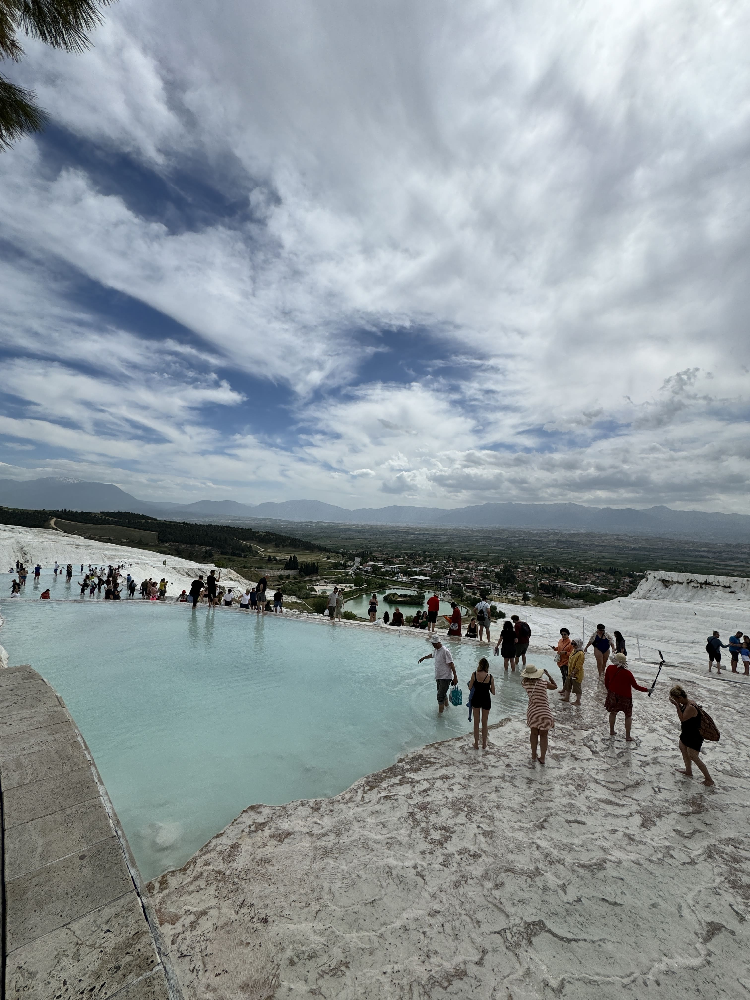
You walk barefoot from the bottom. The water is warm and the calcium surface is smooth under your feet. Looking back down the hill, the town of Denizli visible in the valley, mountains behind it — it is a genuinely odd and beautiful thing. The Cleopatra Antique Pool at the top, where you swim among actual sunken Roman columns in warm mineral water, is the kind of experience that sounds gimmicky and turns out to be quietly wonderful.
A final drive to the Aegean coast, and Kusadasi delivered the kind of sunset that makes you understand why people have been coming to this particular stretch of Turkish coastline for millennia. Pine-covered headlands dropping into still water, the light going pink and gold, Greece visible across the strait.
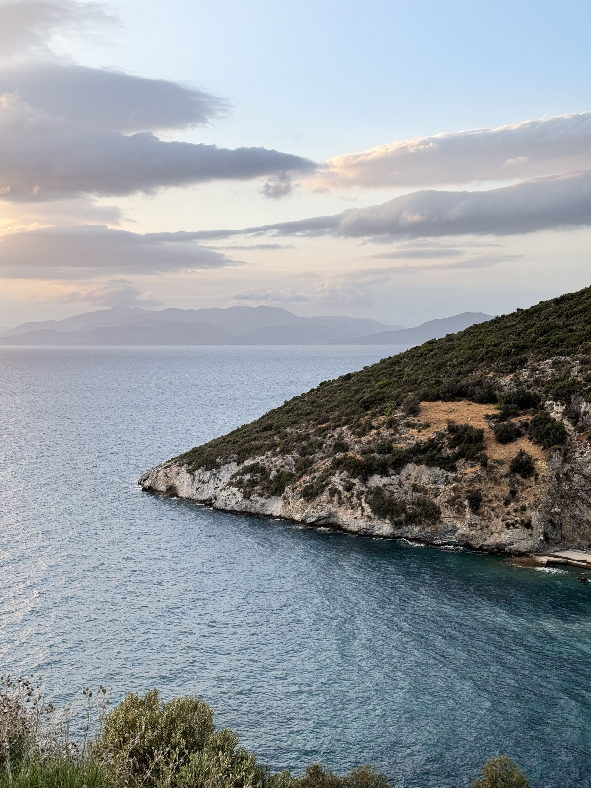
The following morning: Ephesus. One of the best-preserved Roman cities in the world, and walking it does something to you that photographs never quite convey. The marble street that Mark Antony and Cleopatra walked. The Library of Celsus, two storeys of facade still standing. The Great Theatre, which seated 25,000 people and still could. The scale of it — the ambition of the civilisation that built it — sits with you for days after.
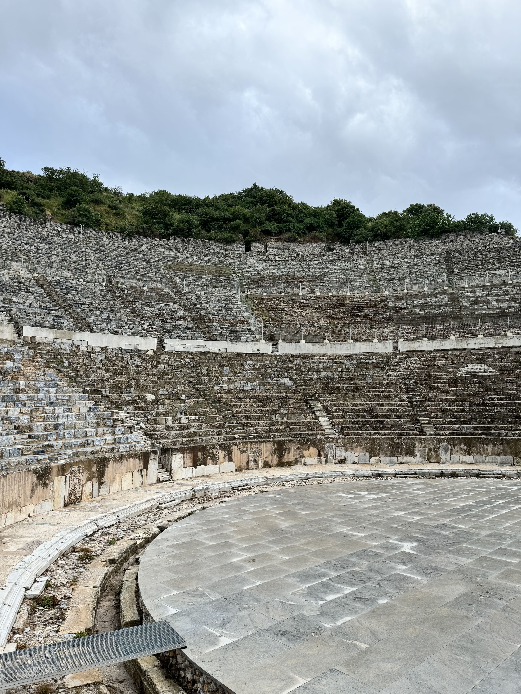
Turkey's nazar boncugu — the blue glass evil eye amulet — hangs from the rear-view mirrors of taxis, over the doorways of shops, on the walls of hotels, around the necks of cats. It is everywhere and it is for sale in every possible size in the Grand Bazaar, where an entire section of shops sells nothing but variations on the blue eye. We bought several. They are in our house now, which perhaps explains our good fortune since.
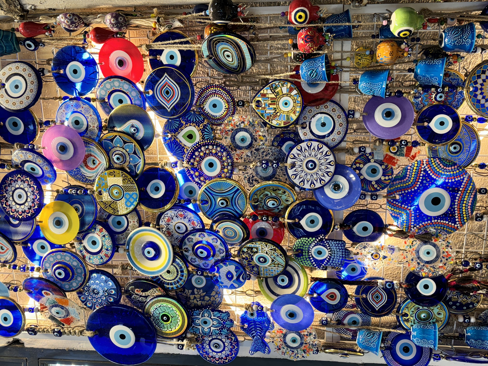
April is close to perfect timing for Turkey. Istanbul sits around 14–19°C — warm enough for light layers but not yet the summer heat. The tulip festival runs through most of April and the city is at its most beautiful. Cappadocia nights drop to around 5°C so bring a real jacket for the early morning balloon launch. The coast and Pamukkale reach 20–24°C by day. Comfortable walking shoes throughout — Istanbul's cobblestones and Cappadocia's valley trails punish anything impractical.
Planning a Turkey trip? Our 13-day route — Istanbul, Cappadocia, Antalya, Pamukkale, Kusadasi — is on the site.
Message us on WhatsApp